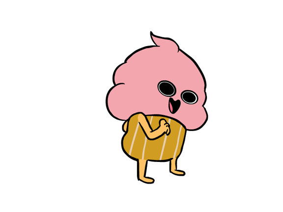

How to make apple crumble cupcakes!

The ingredients to make the cupcakes :
2 Eggs
230g Plain Flour
155g Sugar
125g Unsalted Butter at Room Temperature
2 tsps Baking Powder
1 tsp Ground Cinnamon
1/2 tsp Salt
Apples
The ingredients to make the crumble :
75g Golden Caster Sugar
100g Salted Chilled Butter
140g Self-Raising Flour
1 tsp Vanilla Extract
1/4 tsp Ground Cinnamon
The ingredients to make the icing :
1tsp Cinnamon
1tsp Vanilla Extract
110g Soft Brown Sugar
250g Unsalted Butter at Room Temperature
400g Icing Sugar
2 tspb Whole Milk
How to make the cupcakes :
Start by making the apple mixture. Peel, core and then chop the apples into little squares.
Place in a large saucepan with enough water to cover them and simmer for 5-7 minutes until soft, and then leave until cool.
Cream together butter and caster sugar until light and fluffy.
Add the eggs, then vanilla extract until combined.
Add the flour, baking powder, cinnamon and salt and gently mix until combined.
Carefully fold in the apple mix.
Spoon the mixture into a lined cupcake tin.
Bake for 15-20 minutes until golden brown.
Now for the crumble topping! :
In a large bowl, rub together the butter, flour, cinnamon and vanilla until nice and crumbly, and then stir in the sugar.
Spread the crumble mix onto a lined baking tray and bake for 5-10 minutes until just golden.
And the icing! :
Beat together the butter and brown sugar with the cinnamon and vanilla extract, for 5-7 minutes until fully combined and light and fluffy.
Add the icing sugar a little bit at a time and continue to beat on a low speed.
Add the milk a tablespoon at a time until the icing is light and creamy but stiff enough to hold it’s shape.
To build the cupcakes :
Once the cupcakes and crumble are fully cooled, spoon the icing into a piping bag fitted with a star nozzle.
Spread a small amount of icing on the top of each cupcake, and add the crumble mixture.
Using the piping bag, pipe a small swirl of icing onto the top of the crumble on each cupcake. Top with a small sprinkle of crumble, and enjoy!